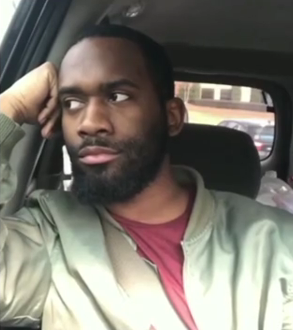

Mas Amba adalah salah satu tokoh utama yang paling ikonik dari meme jomok.
Mas Rusdi merupakan salah satu tokoh meme jomok yang juga ikonik, dia memiliki usaha Barbershop dan berprofesi sebagai tukang cukur di Kota Ngawi Selatan. Ia merupakan teman dekat Mas Amba dan Si Imut.
Si Imut adalah salah satu tokoh meme jomok, dia adalah sahabat Mas Rusdi dan Mas Andre.

Mas Andre naksir sama Mas Azril loh ya 😹